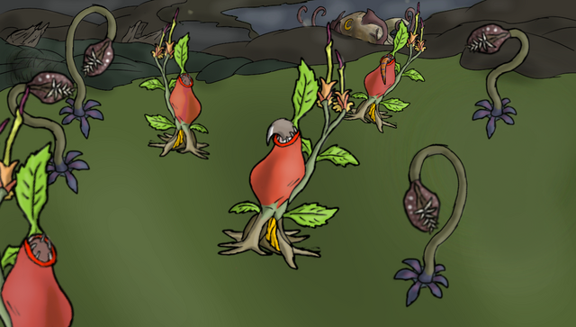
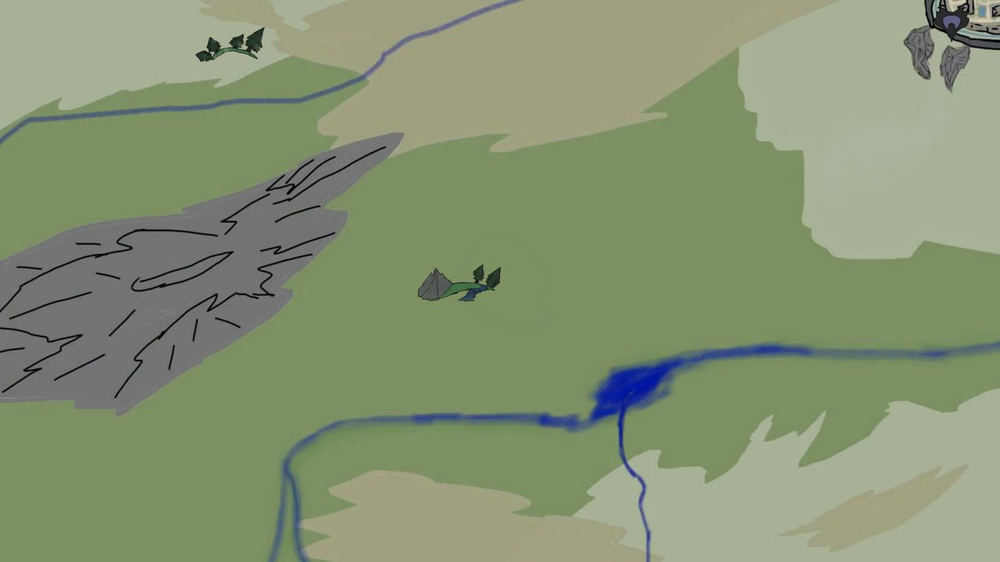
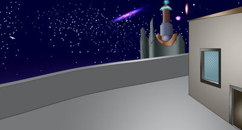
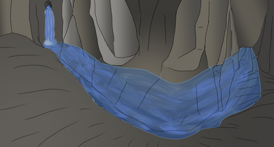

Vinious Swamp
Vinious Swamp located in the southen parts the wilderness in the providence of Veariaum
is filled with carnivorous plants and predator that thrives on any prey that wonders
through these grounds, the swamp is a dangoerous area because of these plants. These
plants are large enough to capture and devour prey up to 7ft tall. Many adventurers
and travelers who had to attempt to cross the swamp for a quest, but couldn not reach
the other side. There are places and providences that would be reach crossing through
the swamp and some others located within that are safe locations within.
There residents who adapts and lives within Vinious Swamp in some hamlets and settlements
scattered in some areas of the swamp. There are also towns boardering the swamp, some of
those residents are not as adapt to lifestyle with Vinious Swamp. There are times where
one must traverse through these swamp lands to these areas for important dealings and
missions between these areas.

Veariaum Map
The map of providence of Veariaum showing the outskits of the main capital, the rivers, the
valleys, grasslands and the mountains.

Veariaum Capital
Veariaum capital city has establish a free govenment where judges and cheif judge are elected as
leaders of the land half a century ago and is intended to establish a system where no one species
would be above another. For the first twenty five years there were peace, even though Monarchic
Council attempts to usurp power from the curtain citizens with a hierarchy of species, but always
been thwarted by the Free Order maintain the citizens' power. Monarchic Council will attempt to
establish a monarchy instead of a free govenment.

Scavager's Dungeon
In a neighboring providence Koaulti south of Veariaum there is a terrible dungeon where prisoners
with has no source of food, except for the deceased. When prisoners are sent into this cavern, they
are thrown into the river in a gorge that leads to a underground waterfall into tunderwater stream
that with the dungeon called Scavager Cavern for mentioned reasons. The only way to escape the dungeon
is a underwater labyrinth, if any prisoner escapes without drowning would be allow to go free.

Characters Bios